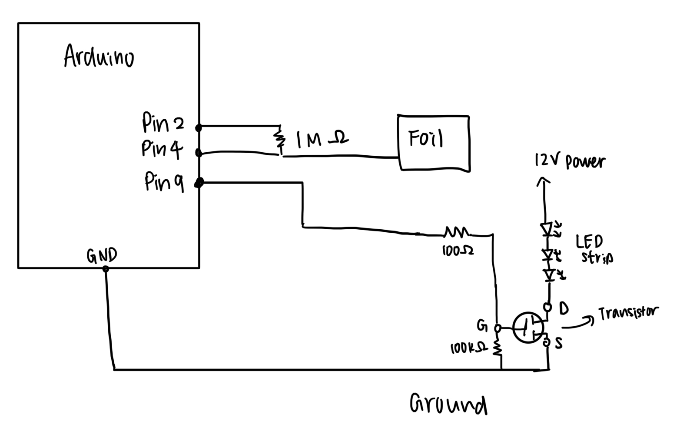
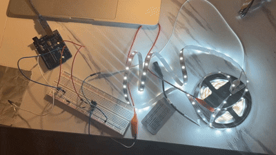
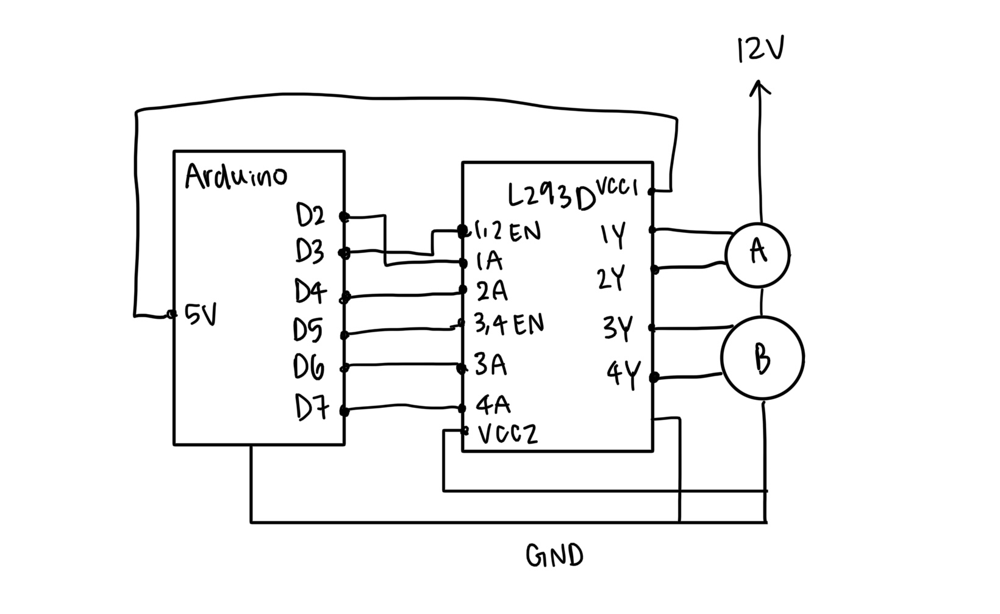

This assignment uses a capacitive touch sensor with a piece of aluminum foil and a transistor to control the brightness of the LED strip.
Touching the foil causes the LED to brighten. The external power supply powers the LED, and the Arduino only controls the gate signal.
Schematic

Schematic for A5: Schematic showing the Arduino controlling the LED strip through a transistor. A 1 MΩ resistor connects Arduino pins 2
and 4 to form a capacitive sensor, with an aluminum foil connected to pin 4. A 100 kΩ resistor keeps the transistor gate stable, and the
Arduino pin 9 adjusts the LED brightness.
Animated GIF

When I touch the aluminum foil, the LED increases brightness.
Firmware
// Include the CapacitiveSensor library
#include <CapacitiveSensor.h<
// 1MΩ resistor between D2 and D4, D4 is the sensor
CapacitiveSensor cs_2_4 = CapacitiveSensor(2, 4);
// Transistor gate pin connected to D9
const int transistor = 9;
void setup() {
// turn off autocalibration
cs_2_4.set_CS_AutocaL_Millis(0xFFFFFFFF);
Serial.begin(9600);
// set transistor as output
pinMode(transistor, OUTPUT);
}
void loop() {
// measure how long the read takes
long start = millis();
// read capacitive sensor
long total = cs_2_4.capacitiveSensor(30);
// print timing and raw value
Serial.print(millis() - start);
Serial.print("\t");
Serial.println(total);
// map sensor value to brightness
total = constrain(total, 0, 2000);
int brightness = map(total, 0, 2000, 0, 255);
// write PWM to gate
analogWrite(transistor, brightness);
// delay to limit data
delay(10);
}
Value Justifications
Expected voltages and currents:
LED strip + pad: 12 V (from the adapter).
LED strip – pad: 0 V during PWM “on”; 12 V during PWM “off”.
Transistor Gate: 0–5 V PWM from Arduino D9.
Transistor Drain: 0 V when on, 12 V when off.
Transistor Source: 0 V
LED strip current: I = P/V I = 16W/12V = 1.33A, far below the transistor’s limit of 32A.
Resistor justifications:
The 1 MΩ resistor between D2 and D4 creates the capacitive sensor, allowing the Arduino to detect tiny changes in touch.
The 100 kΩ resistor connects the transistor’s gate to ground, which keeps the transistor stable.
The 100 Ω resistor is between Arduino D9 and the transistor’s gate. It limits the small amount of current when Arduino changes the gate voltage.
Additional Questions
The absolute maximum amount of continuous current between pins 2 and 3 is 37.2A, and pulsed operation can be 80A.
Schematic:
Schematic showing arduino controls a DC motor using transistor. Flyback diode protects it against voltage spikes, capacitors smooth moter's power supply.
Schematic:

Schematic showing arduino controls two DC moters using the L293D chip.
// pin setup
EN_A = 3;
A1 = 2;
A2 = 4;
EN_B = 5;
B1 = 6;
B2 = 7;
setup:
set EN_A, EN_B, A1, A2, B1, B2 as OUTPUT
write EN_A = HIGH /
write EN_B = HIGH
motorA_forward: write A1=HIGH; write A2=LOW
motorA_back: write A1=LOW; write A2=HIGH
motorA_stop: write A1=LOW; write A2=LOW
motorB_forward: write B1=HIGH; write B2=LOW
motorB_back: write B1=LOW; write B2=HIGH
motorB_stop: write B1=LOW; write B2=LOW
loop:
// 1: both forward
motorA_forward; motorB_forward;
// 2: both backward
motorA_back; motorB_back;
// 3: A forward, B backward
motorA_forward; motorB_back;
// 4: A backward, B forward
motorA_back; motorB_forward;
Use of AI: I used chatgpt in this assignment. Initially, I needed to refresh my memory on how to incorporate the external power supply.
AI helped me to clarify this connection, such as reminding me where to clip the alligator clips, and confirming what connects to the positive and negative terminals.
It also helped me to confirm my resistor's placement on the breadboard and verify if I have selected the correct resistance. I also used it to debug my code and circuit.
I had a little trouble incorporating the foil touch pad; the LED couldn't light up when I added the sensor, so I asked chatgpt what the problem could be and it
generated some test code, which allowed me to tell where the problem occured and I successfully fixed it. I also asked AI about the second additional question, where I wasn't sure
how to incorporate capacitors and diode in that circuit schematic, and it explained to me their functions.